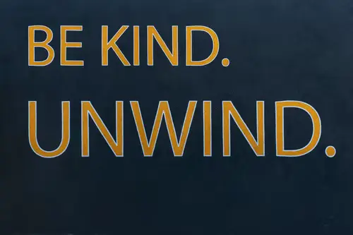

SELF-GUIDED MEDITATION
BREATH
“Breathing is important in the practice of meditation because it is the faculty in us that is simultaneously voluntary and involuntary."— Alan Watts
Why is breathing so important?
The act of focused breathing allows us to enter a space away from the hectic life surrounding us.
Instructional Video
Exercise
- Find yourself a space where you can relax.
- Sit in a comfortable position, but a position where you are still alert. E.g. on the ground
- Breathe in through your nose. Let your belly fill with air.(Allow this, do not force it)
- Breathe out through your nose.
- You should feel your belly rise as it fills with air. Your chest can of course also rise.
- Continue this process for as long as you feel comfortable to do so. A recommendation is to spend 5-10 minutes repeating this exercise
BODY SCAN
"It's like scanning the body — not with an x-ray, but with the ray of your mindfulness."— Thich Nhat Hanh in Peace of Mind
What is body scanning?
Body Scanning is the act of focusing on parts of the body from head to toe, usually in sequence
Instructional Video
Exercise
- Similar to the breath exercise, find a comfortable, quiet space. For this exercise,
- Start by placing your focus on the top of your head.
- Do you feel tension? Is this area aching?
- Check in on your breathing, and allow yourself to take deep, calming breaths.
- From here, move on downwards through your body, and repeat this process.
- When you get to the bottom of your toes, you can begin to move from here, all the way back to the top of your head. Make note of how you feel after each scan.
RESET
"Some people think that meditation takes time away from physical accomplishment. Taken to extremes, of course, that’s true. Most people, however, find that meditation creates more time than it takes."— Peter McWilliams
What is the purpose of resetting?
A short restart can allow us to get back to our peak performance.
Instructional Video
Exercise
- Once again, find a comfortable, quiet space.
- Close your eyes, or look downwards away from distraction.
- Allow your body to release tension. You can drop your shoulders, loosen your jaw, etc.
- Notice your body, does it feel heavy, light, tense?
- You can now proceed to inhale through the nose, and exhale through the mouth, noticing the pause in between the exhale
- Allow your breath to reset to its natural rhythm. Allow your mind to breath with each breath.
- You can repeat this process for as long as you like, but a short span of this exercise should really help with resetting!